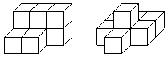
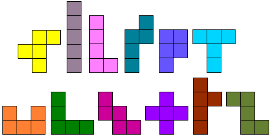
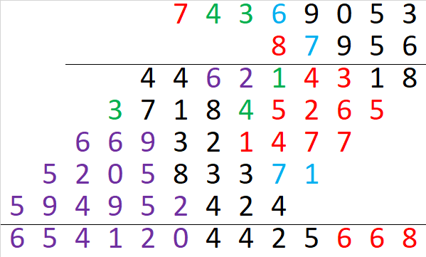
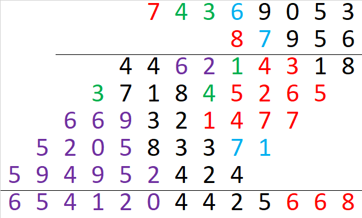
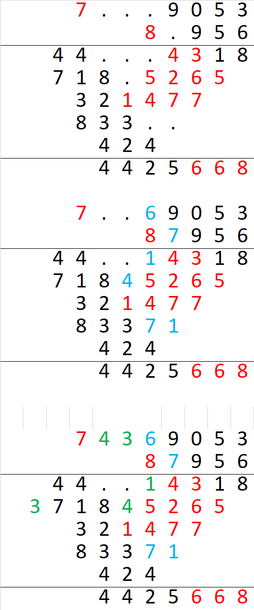
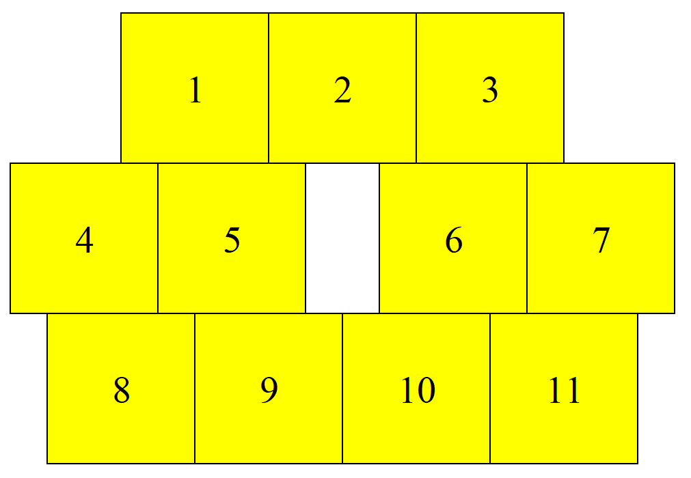

Задача 8.1. Среднее арифметическое всех Володиных оценок по геометрии за четверть — целое число. Если заменить все двойки — тройками, тройки — четверками, а четверки — пятерками, то среднее арифметическое оценок опять-таки будет целым. Что Володя получил в четверти, если известно, что не все его оценки — одинаковые? Ответ: тройку. Решение: Пусть Володя получил за четверть n оценок. Рассмотрим их сумму. Так как при указанной замене каждое слагаемое увеличилось не более, чем на 1, то сумма увеличилась не более, чем на n, а среднее арифметическое – не более, чем на 1. Для того, чтобы среднее арифметическое увеличилось ровно на 1 (и осталось целым), необходимо, чтобы на 1 увеличилась каждая Володина оценка, значит, ни пятерок, ни единиц у него не было. Так как не все Володины оценки одинаковые, то среди Володиных оценок должны быть оценки выше двойки, и должны быть оценки ниже четверки. Тогда среднее арифметическое чисел набора больше, чем 2, но меньше, чем 4. Значит оно равно 3. Отметим, что описанная в задаче ситуация возможна, если Володя получил по геометрии одинаковое количество двоек и четверок и произвольное количество троек.
Задача 8.2. Найдите пять чисел, зная, что их суммы по три соответственно равны 3, 5, 6, 9, 10, 10, 12, 14, 16 и 17.
Задача 8.3. На шахматной доске расставлены ладьи так, что на каждой вертикали и на каждой горизонтали находится ровно одна ладья. Доску разбили на четыре равных квадрата. Верно ли, что число ладей в правом верхнем квадрате равно числу ладей в левом нижнем квадрате?
Задача 8.4. Каждый из трех игроков записывает 100 слов, после чего записи сравнивают. Если слово встретилось хотя бы у двоих, то его вычеркивают из всех списков. Могло ли случиться так, что у первого игрока осталось 54 слова, у второго — 75 слов, а у третьего — 80 слов?
 Задача 8.5.
Как на стол поставить
а)
как можно меньше,
б)
ровно 8 одинаковых кубиков так, чтобы полностью были видны ровно 23 грани кубиков, а остальные грани видны не были?
Задача 8.6. Какова величина угла между часовой и минутной стрелками часов, показывающими 16 ч 40 мин? Укажите следующий момент времени, когда между ними будет такой угол.
Задача 8.7. Дан клетчатый квадрат 10 × 10. Внутри него провели 80 единичных отрезков по линиям сетки, которые разбили квадрат на 20 многоугольников равной площади. Докажите, что все эти многоугольники равны.
Задача 8.8. На циферблате правильно идущих часов барона Мюнхгаузена есть только часовая, минутная и секундная стрелки, а все цифры и деления стёрты. Барон утверждает, что может определять время по этим часам, поскольку, по его наблюдению, на них в течение дня (с 8.00 до 19.59) не повторяется два раза одно и то же расположение стрелок. Верно ли наблюдение барона? (Стрелки имеют различную длину, движутся равномерно.)
 

Дополнительные задачи
Задача 8.9. В одиночных камерах сидят 4 друга-математика. Каждому из них сообщили, что их номера в списке различны, двузначны, и один из этих номеров равен сумме трёх других. Но, даже узнав номера троих других, никто из них не смог вычислить свой номер. Так какие же у них были номера?
Задача 8.10. Когда учитель вошёл в класс, дежурный стирал запись предыдущего урока, которую учитель собирался использовать. Остановив дежурного, учитель попросил его по оставшимся цифрам восстановить стёртые. Можно ли это сделать?
Задача 8.11. Может ли сумма 1 + 2 + 3 + ... + n оканчиваться (при каком-либо n) на 2018?
Задача 8.12. Расположите на плоскости одиннадцать одинаковых квадратов, не налегающих друг на друга, так, чтобы выполнялось следующее условие: как бы ни покрасить эти квадраты тремя красками, обязательно какие-нибудь два квадрата одного цвета будут иметь общий участок границы.
